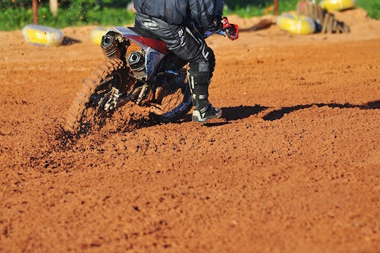
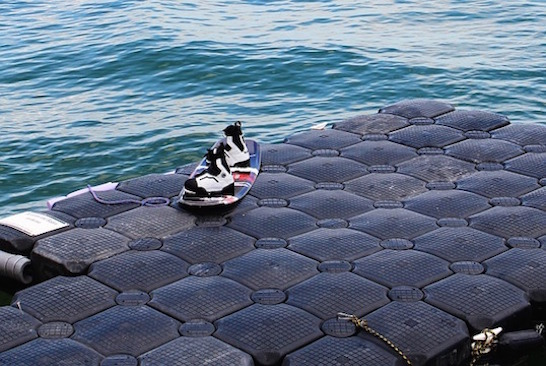
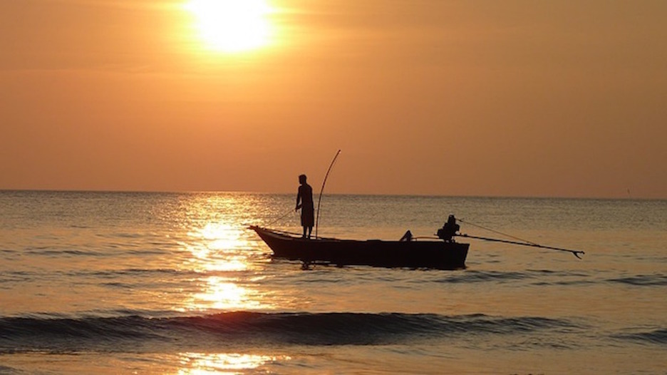
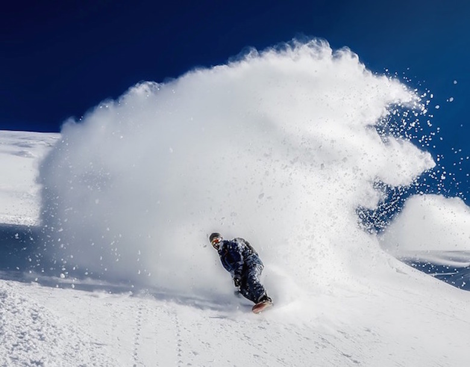
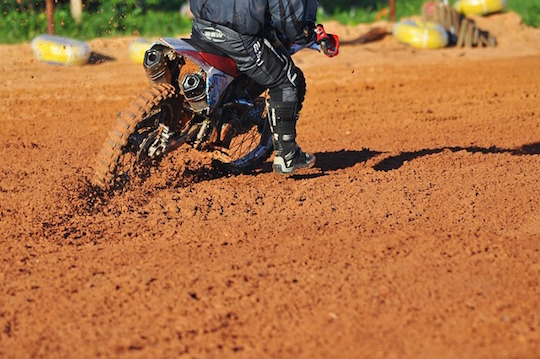
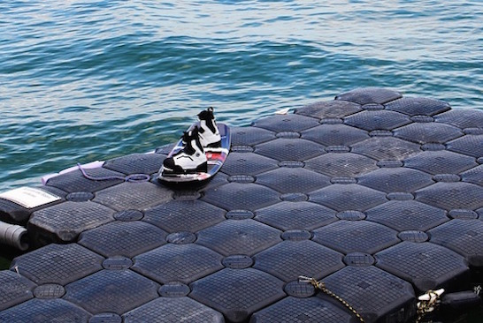
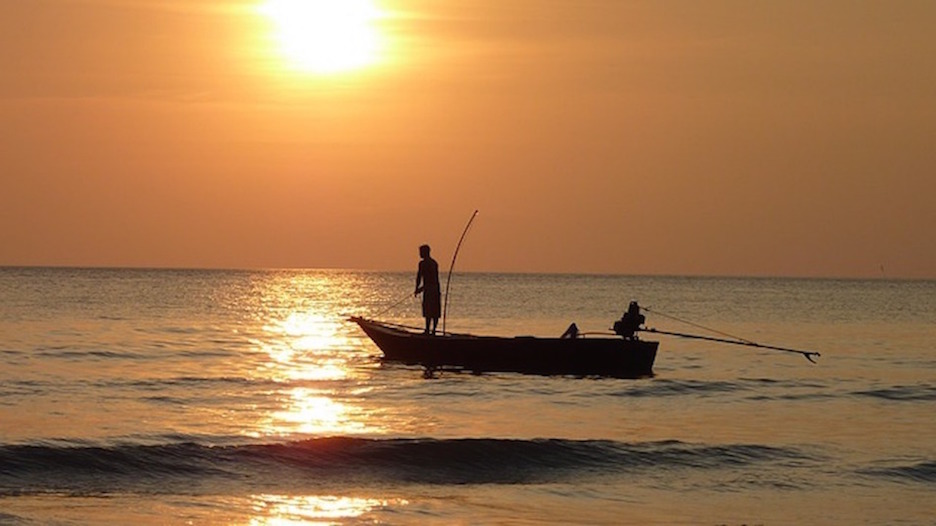
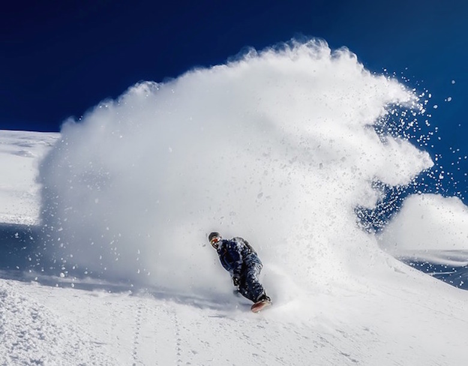

Amazing Skills
Some of my amazing skills include . . .
Dirt Bike Riding
Wakebaording
Fishing
Snowboarding

Dirt Bike Riding
Wakebaording
Fishing
Snowboarding
Working and using airsoft guns is one of my favorite because it is fun to have competitions with my friends and see who is a better shot but always be sure to always be safe. A really cool challenge that I put myself up to is upgrading my gun and making it work better and making the trigger response more accurate. Although many people belive that it is dangerous and kids shouldn't use them, that is true unless you feel that they are responsible enough.
Dirt bike riding is really amazing if you know how to ride. Just to be riding is fun and pulling off stunts is cool too. For me, the best part about dirt bike riding is falling and laughing at the past. This really dangerous so practice is always recommended. Just recently, I fell really bad and got injured but a lot of funny stuff happened. After I was in pain, I laughed with my family and laughed at how I fell and I had a great time. The only thing you need to do is get lots of prtection because if I didn't have all of my gear, I could have been in the hospital.
Wakeboarding is always fun during the summer. When it is hot and humid and you just want to cool off, this is the best way and you have fun at the same time. Wakeboarding is fun when you jump over the wake or when you jump over the wave the boat makes. The only difficult part is getting up but it is always fun. A tip to getting up when wakeboarding is to not look down and lean back. A lot of people have a tendency to lean forward but that just makes it worse because, once the nose goes down, you do too. So always lean back.
Painting and drawing is a good way to calm yourself down. When I create art, I don't get fustrated but stay calm and always think of the possibilities. For instance if you think you made a mistake and you have ruined it, think of what it could be, transform it to something even better. Sometimes I have changed the picture to match the mistake and it always comes out beautiful. The hardest part though is telling youself not to give up or else you will get angry. When you want to give up and you get mad that you can't make it look good you will definiately fail your artwork.
My interests for present day and the future is engineering. Engineering is very interesting for me because there are so many fields and so many different types of engineering. The field that I am most interested in is aerospace. I want to be and aerospace because you always have to think of what could go wrong and how to fix it. Challenging situations such as problems with technical stuff is what I interest in.
I am the youngest child of my family. My family consists of my mother, father, brother, and a pet dog. My mom is a stay home mom and does a lot of both sides of our family. My dad works as an aerospace engineer and manufactures parts. My brother is curently at school as a sophomore at the California Academy of math and Science. I also have a Austrian pincher that is almost 2 years old. Her name is Sophie and she doesn't like being pet under the chin.